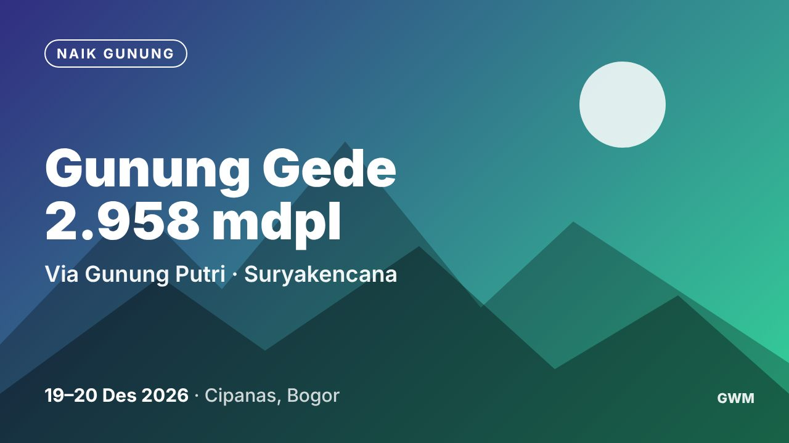

Naik Gunung · Pendakian
Pendakian Bareng Gunung Gede via Gunung Putri
- Tanggal
- 19 Des 2026 – 20 Des 2026
- Lokasi
- Basecamp Gunung Putri, Cipanas, Bogor, Bogor
- Harga
- SIMAKSI & Patungan Rp200.000
Pendakian bersama menuju Alun-Alun Suryakencana Gunung Gede. Terbuka untuk solo hiker yang mencari rekan satu tim.
Buka di GoWithDME Beli tiket / info resmi
Cek ulang jadwal dan harga di kanal resmi penyelenggara sebelum membeli tiket.